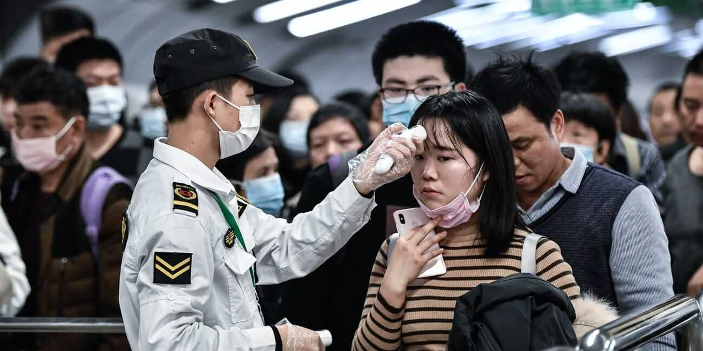

beginning of Covid-19 
How did corona viruse start ?
The disease appears to have originated from a Wuhan seafood market where wild animals, including marmots, birds, rabbits, bats and snakes, are traded illegally. Coronaviruses are known to jump from animals to humans, so it’s thought that the first people infected with the disease – a group primarily made up of stallholders from the seafood market – contracted it from contact with animals. The hunt for the animal source of Covid-19 is still unknown, although there are some strong contenders. A team of virologists at the Wuhan Institute for Virology released a detailed paper showing that the new coronaviruses' genetic makeup is 96 per cent identical to that of a coronavirus found in bats, while a study published on March 26 argues that genetic sequences of coronavirus in pangolins are between 88.5 and 92.4 per cent similar to the human virus. Some early cases of Covid-19, however, appear to have inflicted people with no link to the Wuhan market at all, suggesting that the initial route of human infection may pre-date the market cases. The Wuhan market was shut down for inspection and cleaning on January 1, but by then it appears that Covid-19 was already starting to spread beyond the market itself. On January 21, the WHO Western Pacific office said the disease was also being transmitted between humans – evidence of which is apparent after medical staff became infected with the virus.
for full article